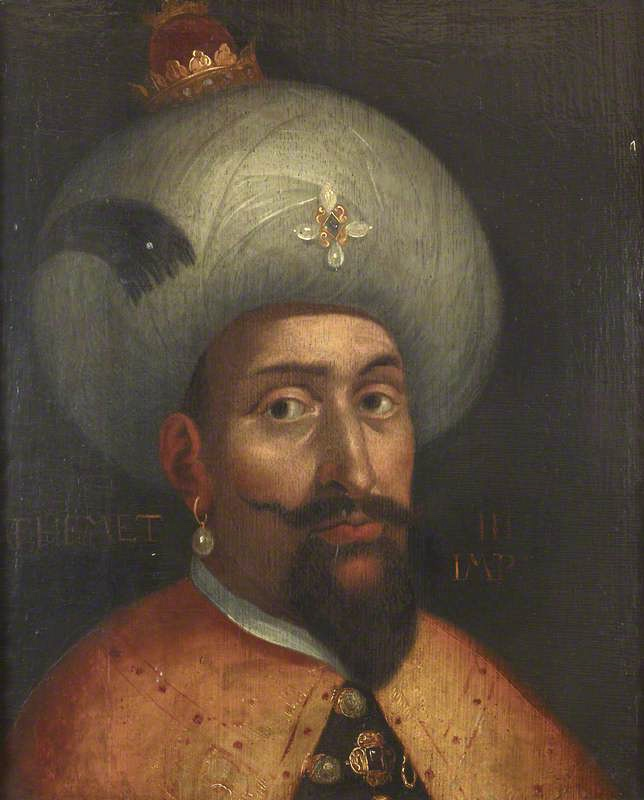

| önceki |  |
sonraki |
III. Mehmed veya tarihteki sanıyla Eğri Fatihi (Osmanlıca: محمد ثالث; d. 26 Mayıs 1566, Manisa – ö. 22 Aralık 1603, İstanbul), Osmanlı İmparatorluğu'nun on üçüncü padişahı ve 78. İslam halifesidir. Babası III. Murad, annesi Safiye Valide Sultan'dır. Osmanlı tarihinde sancağa çıkarak tahta geçen son padişahtır; onun ardından şehzadelerin sancağa gönderilmesi usulü kaldırılarak Kafes Sistemi uygulanmaya başlanmıştır. Dedesi Kanunî Sultan Süleyman'dan 30 yıl sonra bizzat ordusunun başında sefere çıkan ilk padişah olmuş; Eğri Kalesi'ni fethedip Haçova Meydan Muharebesi'ni kazanmıştır.
Sancak Yılları ve Kanlı Cülus (1595)
26 Mayıs 1566 tarihinde Manisa Sarayı'nda doğdu. Dedesi Kanunî Sultan Süleyman Zigetvar Seferi'ne çıkmadan önce doğumu haber almış ve torununa kendi babası Fatih'in adını vermiştir. 1583 yılında Manisa Sancakbeyliği'ne tayin edildi ve 12 yıl boyunca şehzadeliğini idarecilik yaparak geçirdi.
Babasının vefatı üzerine 16 Ocak 1595'te İstanbul'a gelerek tahta çıktı. Tahta geçer geçmez nizam-ı âlem kanunu gereğince kundaktaki bebekler de dâhil olmak üzere 19 erkek kardeşini aynı gün sarayda boğdurttu. Bu hadise Osmanlı tarihindeki en kitlesel ve trajik kardeş katli olarak halk, asker ve ulema nezdinde derin bir teessür ve keder yarattı; kardeş katli uygulamasının sorgulanmasına ve son bulmasına giden süreci başlattı.
Eğri Kalesi'nin Fethi ve "Eğri Fatihi" Unvanı (1596)
Avusturya cephesinde Estergon ve Yanıkkale'nin düşman eline geçmesi üzerine, hocası büyük tarihçi Hoca Sâdeddin Efendi'nin "Padişahım, ecdadınız gibi bizzat gazaya çıkmanız farzdır, askere kuvvet verir" telkinleriyle ordusunun başına geçti:
Macaristan'ın fethi imkânsız kabul edilen müstahkem Eğri Kalesi kuşatıldı. Padişahın bizzat yönettiği 18 günlük şiddetli top ateşi ve lağım patlatmalarının ardından 12 Ekim 1596'da kale teslim alındı. Bu muazzam zaferle III. Mehmed tarihe "Eğri Fatihi" unvanıyla geçti.
Haçova Meydan Zaferi (24 – 26 Ekim 1596)
Eğri fethinin ardından Avusturya Arşidükü Maximilian komutasındaki Avusturya, Alman, İspanyol, İtalyan ve Macar askerlerinden oluşan 100 bin kişilik müttefik Haçlı ordusuyla Macaristan'da Haçova bataklıklarında karşılaşıldı. Haçova Meydan Muharebesi dünya harp tarihinin en dramatik dönüm noktalarından biridir:
- Savaşın ikinci gününde müttefik süvarileri Osmanlı hatlarını yararak padişahın otağ-ı hümayununa kadar girdi; hazine sandıklarını yağmalamaya başladı.
- Padişah geri çekilmek isterken Hocası Sâdeddin Efendi hırkasına yapışarak tarihe geçen şu ikazı yaptı:
"Padişahım yerinizde sebat ediniz! Cengdir bu, zafer ancak sebat edenindir!" - Tam bu esnada gerideki ordu hizmetlileri; aşçılar, seyisler, deveciler, katırcılar ve nalbantlar ellerine geçirdikleri kepçe, balta, odun, nacak ve kazanlarla düşman süvarilerinin üzerine çullandı. Düşman saflarında başlayan panik üzerine Cafer Paşa komutasındaki süvariler arkadan taarruz etti. Birkaç dakika içinde kesin bir mağlubiyet büyük bir meydan zaferine dönüştü. Dünya literatürüne "Kepçe-Kazan Zaferi" olarak geçen bu savaşta 50 binden fazla Haçlı askeri imha edildi.
Kanije Müdafaası (1601) ve Tiryaki Hasan Paşa
III. Mehmed devrinin bir diğer unutulmaz destanı, Macaristan serhaddindeki Kanije Kalesi'nde yazıldı. Tiryaki Hasan Paşa komutasındaki 9 bin kişilik kahraman Osmanlı garnizonu, Avusturya Arşidükü komutasındaki 80 bin kişilik devasa Haçlı ordusuna karşı kaleyi 73 gün boyunca açlık, cephanesizlik ve hile-i şer'iyyelerle müdafaa etti; nihayetinde ani bir gece huruç harekâtıyla düşman ordusunu bozguna uğratarak 47 parça ağır topu ganimet aldı.
Celâlî İsyanları, Büyük Kaçgunluk ve Şehzade Mahmud Trajedisi
Dışarıda zaferler kazanılırken içeride Anadolu, Karayazıcı, Deli Hasan, Tavil Halil ve Kalenderoğlu gibi Celâlî reislerinin isyanlarıyla harabeye döndü. Güvenliği kalmayan köylüler topraklarını terk edip dağlara ve şehirlere kaçtı (Büyük Kaçgunluk devri).
Diğer yandan sarayda Valide Safiye Sultan'ın baskısı sürüyordu. Ordunun ve yeniçerilerin çok sevdiği, Celâlîleri bastırmak için ordu başına geçmek isteyen cesur ve liyakatli büyük şehzadesi Şehzade Mahmud, Safiye Sultan'ın kışkırtması ve bir şeyhin "yakında padişah olacağı" yönündeki mektubunun ele geçmesi üzerine Haziran 1603'te babasının emriyle boğduruldu. Bu trajik hadise padişahın ruhunda derin bir melankoli ve vicdan azabı yarattı.
Vefatı
III. Mehmed, henüz 37 yaşındayken 22 Aralık 1603 tarihinde Topkapı Sarayı'nda geçirdiği kalp krizi (veya veba) sebebiyle genç yaşta vefat etti. Cenazesi Ayasofya Camii haziresindeki Mimar Dalgıç Ahmed Ağa yapımı türbesine defnedildi.
Ailesi
- Eşleri:
- Handan Vâlide Sultân (I. Ahmed'in annesi)
- Halime Vâlide Sultân (I. Mustafa ve Şehzade Mahmud'un annesi)
- Erkek çocukları:
- Şehzade Mahmud (1587 – 1603, trajik şekilde katledildi)
- I. Ahmed (Osmanlı Padişahı, 1590 – 1617)
- I. Mustafa (Osmanlı Padişahı, 1591 – 1639)
- Şehzade Selim (1585 – 1597)
- Şehzade Cihangir (1599 – 1602)
- Kız çocukları:
- Dilruba Sultân (Sadrazam Kara Davut Paşa'nın eşi)
- Ayşe Sultân (Sadrazam Destari Mustafa Paşa'nın eşi)
- Fatma Sultân
III. Mehmed hakkında daha fazla bilgi için buraya tıklayın.